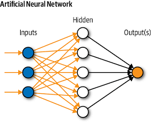

Hello, my name is Aridya
Started with an interest in tech, my curiosity lead me into programming. Once a robotic club leader in high school, now, i'm currently learning web dev.
Walking forward is staying still while staying still is walking backward. For the world have no mercy, nor does it have patience.
PROJECTS
Mock Data
RapidDocker
RapidDocker is a high-performance containerization platform built for instant deployment and rapid scaling. It optimizes system resources through parallelized caching and adaptive load distribution. Basically, it makes Docker look like it's still running on dial-up.
Robonoid
Robonoid is an emotionally aware humanoid robot that learns and mimics human behavior through real-time affective computing. It uses multimodal sensors to detect tone, facial cues, and microexpressions to generate genuine emotional responses. In short, it feels things—almost better than your ex.

Neureal
Neureal is a neural network modeled on the structural and functional patterns of the human brain. It uses dynamic neuron mapping and recursive learning loops to achieve near-human cognitive similarity. Think human reasoning, minus the bad decisions.